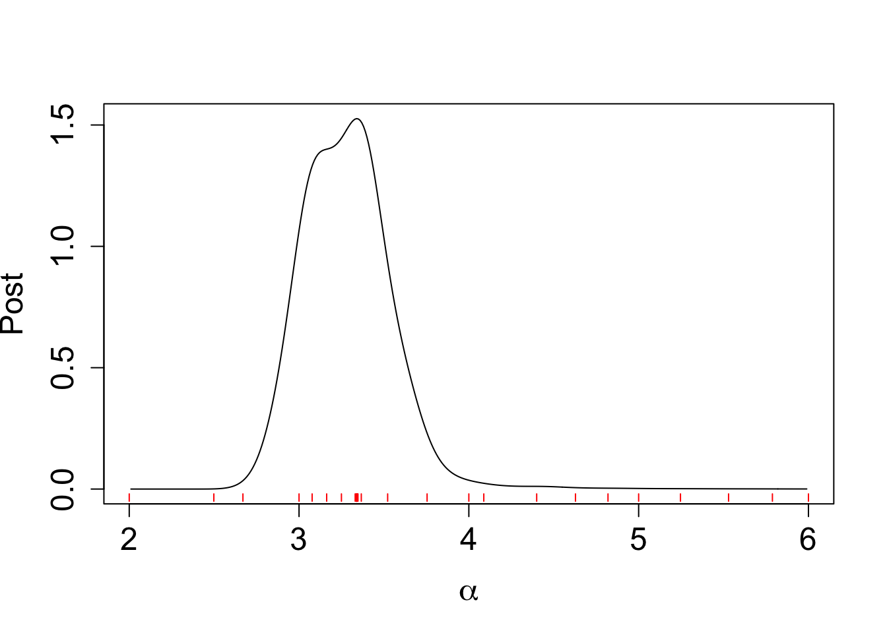

Last updated: 2025-04-29
Checks: 7 0
Knit directory: BOSS_website/
This reproducible R Markdown analysis was created with workflowr (version 1.7.1). The Checks tab describes the reproducibility checks that were applied when the results were created. The Past versions tab lists the development history.
Great! Since the R Markdown file has been committed to the Git repository, you know the exact version of the code that produced these results.
Great job! The global environment was empty. Objects defined in the global environment can affect the analysis in your R Markdown file in unknown ways. For reproduciblity it’s best to always run the code in an empty environment.
The command set.seed(20250415) was run prior to running
the code in the R Markdown file. Setting a seed ensures that any results
that rely on randomness, e.g. subsampling or permutations, are
reproducible.
Great job! Recording the operating system, R version, and package versions is critical for reproducibility.
Nice! There were no cached chunks for this analysis, so you can be confident that you successfully produced the results during this run.
Great job! Using relative paths to the files within your workflowr project makes it easier to run your code on other machines.
Great! You are using Git for version control. Tracking code development and connecting the code version to the results is critical for reproducibility.
The results in this page were generated with repository version 511d2f2. See the Past versions tab to see a history of the changes made to the R Markdown and HTML files.
Note that you need to be careful to ensure that all relevant files for
the analysis have been committed to Git prior to generating the results
(you can use wflow_publish or
wflow_git_commit). workflowr only checks the R Markdown
file, but you know if there are other scripts or data files that it
depends on. Below is the status of the Git repository when the results
were generated:
Ignored files:
Ignored: .DS_Store
Ignored: .Rhistory
Ignored: .Rproj.user/
Ignored: analysis/.DS_Store
Ignored: analysis/.Rhistory
Ignored: code/.DS_Store
Ignored: data/.DS_Store
Ignored: data/sim1/
Ignored: output/.DS_Store
Ignored: output/sim2/.DS_Store
Untracked files:
Untracked: ComparisonPosteriorDensity_B_10.tex
Untracked: ComparisonPosteriorDensity_B_15.tex
Untracked: ComparisonPosteriorDensity_B_20.tex
Untracked: ComparisonPosteriorDensity_B_25.tex
Untracked: ComparisonPosteriorDensity_B_30.tex
Untracked: ComparisonPosteriorDensity_B_35.tex
Untracked: ComparisonPosteriorDensity_B_40.tex
Untracked: ComparisonPosteriorDensity_B_45.tex
Untracked: ComparisonPosteriorDensity_B_50.tex
Untracked: ComparisonPosteriorDensity_B_55.tex
Untracked: ComparisonPosteriorDensity_B_60.tex
Untracked: ComparisonPosteriorDensity_B_65.tex
Untracked: ComparisonPosteriorDensity_B_70.tex
Untracked: ComparisonPosteriorDensity_B_75.tex
Untracked: ComparisonPosteriorDensity_B_80.tex
Untracked: code/mortality_BG_grid.R
Untracked: code/mortality_NL_grid.R
Untracked: data/co2/
Untracked: data/mortality/
Untracked: data/simA1/
Untracked: output/co2/
Untracked: output/mortality/BOSS_result.rds
Untracked: output/mortality/BO_result_BG.rda
Untracked: output/mortality/BO_result_NL.rda
Untracked: output/mortality/mod_BG.rda
Untracked: output/mortality/mod_NL.rda
Untracked: output/sim1/figures/
Untracked: output/sim1/result_ad.rda
Untracked: output/sim2/BOSS_result.rda
Untracked: output/sim2/quad_sparse_list.rda
Untracked: output/simA1/
Unstaged changes:
Modified: analysis/problem_with_opt.rmd
Modified: analysis/sim1.Rmd
Modified: code/00_BOSS.R
Modified: output/sim1/BO_result_list.rda
Modified: output/sim1/BO_result_original_list.rda
Modified: output/sim1/all_result.rda
Modified: output/sim1/kl_compare.pdf
Modified: output/sim1/ks_compare.pdf
Modified: output/sim2/BO_data_to_smooth.rda
Modified: output/sim2/BO_result_list.rda
Modified: output/sim2/rel_runtime.rda
Note that any generated files, e.g. HTML, png, CSS, etc., are not included in this status report because it is ok for generated content to have uncommitted changes.
These are the previous versions of the repository in which changes were
made to the R Markdown (analysis/co2.Rmd) and HTML
(docs/co2.html) files. If you’ve configured a remote Git
repository (see ?wflow_git_remote), click on the hyperlinks
in the table below to view the files as they were in that past version.
| File | Version | Author | Date | Message |
|---|---|---|---|---|
| Rmd | 511d2f2 | Ziang Zhang | 2025-04-29 | workflowr::wflow_publish("analysis/co2.Rmd") |
| html | dc232e0 | Ziang Zhang | 2025-04-29 | Build site. |
| Rmd | 2e9142f | Ziang Zhang | 2025-04-29 | workflowr::wflow_publish("analysis/co2.Rmd") |
| html | 45f5f0a | Ziang Zhang | 2025-04-20 | Build site. |
| Rmd | c1e8a69 | Ziang Zhang | 2025-04-20 | workflowr::wflow_publish("analysis/co2.Rmd") |
In this example, we apply the BOSS algorithm to analyze the atmospheric carbon dioxide (CO2) concentration data, which were collected from an observatory in Hawaii monthly before May 1974, and weekly afterward. In total, this dataset consists of \(n = 2267\) observations.
library(BayesGP)
library(tidyverse)── Attaching core tidyverse packages ──────────────────────── tidyverse 2.0.0 ──
✔ dplyr 1.1.4 ✔ readr 2.1.5
✔ forcats 1.0.0 ✔ stringr 1.5.1
✔ ggplot2 3.5.1 ✔ tibble 3.2.1
✔ lubridate 1.9.3 ✔ tidyr 1.3.1
✔ purrr 1.0.2
── Conflicts ────────────────────────────────────────── tidyverse_conflicts() ──
✖ dplyr::filter() masks stats::filter()
✖ dplyr::lag() masks stats::lag()
ℹ Use the conflicted package (<http://conflicted.r-lib.org/>) to force all conflicts to become errorslibrary(npreg)Package 'npreg' version 1.1.0
Type 'citation("npreg")' to cite this package.function_path <- "./code"
output_path <- "./output/co2"
data_path <- "./data/co2"
source(paste0(function_path, "/00_BOSS.R"))### Read in the full data:
co2s = read.table(paste0(data_path, "/daily_flask_co2_mlo.csv"), header = FALSE, sep = ",",
skip = 69, stringsAsFactors = FALSE, col.names = c("day",
"time", "junk1", "junk2", "Nflasks", "quality",
"co2"))
co2s$date = strptime(paste(co2s$day, co2s$time), format = "%Y-%m-%d %H:%M",
tz = "UTC")
co2s$day = as.Date(co2s$date)
timeOrigin = as.Date("1960/03/30")
co2s$timeYears = round(as.numeric(co2s$day - timeOrigin)/365.25,
3)
co2s$dayInt = as.integer(co2s$day)
allDays = seq(from = min(co2s$day), to = max(co2s$day),
by = "7 day")
observed_dataset <- co2s %>% filter(!is.na(co2s$co2)) %>% dplyr::select(c("co2", "timeYears"))
observed_dataset$quality <- ifelse(co2s$quality > 0, 1, 0)
observed_dataset <- observed_dataset %>% filter(quality == 0)
### Create the covariate for trend and the 1-year seasonality
observed_dataset$t1 <- observed_dataset$timeYears
observed_dataset$t2 <- observed_dataset$timeYears
observed_dataset$t3 <- observed_dataset$timeYears
observed_dataset$t4 <- observed_dataset$timeYearsMotivated by the literature, the hierarchical model has the following structure: \[\begin{equation} \begin{aligned} y_i &= g_{tr}(x_i) + g_{1}(x_i) + g_{\frac{1}{2}}(x_i) + g_{\alpha}(x_i) + e_i,\\ g_{1} &\sim \text{sGP}_1(\sigma_{s}),\ g_{\frac{1}{2}} \sim \text{sGP}_{\frac{1}{2}}(\sigma_{s}) \\ g_{\alpha} &\sim \text{sGP}_{\alpha}(\sigma_{\alpha}),\ g_{tr} \sim \text{IWP}_2(\sigma_{tr}), \\ e_i &\overset{iid}{\sim} \mathcal{N}(0,\sigma_e^2). \end{aligned} \end{equation}\] Here \(y_i\) denote the CO2 concentration observed at the time \(x_i\) in years since March 30, 1960. The component \(g_{tr}\) represents the long term growth trend, modeled using a second order Integrated Wiener process (IWP). The components \(g_1\) and \(g_{\frac{1}{2}}\) represent the annual cycle and its first harmonic, modeled using seasonal Gaussian processes (sGP) with one-year and half-year periodicity. The component \(g_{\alpha}\) is another cyclic component, modeled with a sGP with \({\alpha}\)-year periodicity, where \(\alpha\) is an unknown parameter assigned with an uniform prior between \(2\) to \(6\). All the boundary conditions of the sGP and the IWP are assigned independent priors, \(\mathcal{N}(0,1000)\).
Let \(\alpha\) be the conditioning parameter, the proposed BOSS algorithm is implemented, with \(5\) starting values equally spaced in \([2,6]\) and \(B = 30\) BO iterations.
lower <- 2; upper <- 6; noise_var <- 1e-6
eval_once <- function(a){
mod_once <- model_fit(formula = co2 ~ f(x = t1, model = "IWP", order = 2, sd.prior = list(param = 30, h = 10), k = 30, initial_location = median(observed_dataset$t1)) +
f(x = t2, model = "sGP", sd.prior = list(param = 1, h = 10), a = (2*pi), m = 2, k = 30) +
f(x = t3, model = "sGP", sd.prior = list(param = 1, h = 10), a = (2*pi/a), m = 1, k = 30),
data = observed_dataset,
control.family = list(sd.prior = list(param = 1)),
family = "Gaussian", aghq_k = 3)
mod_once$mod$normalized_posterior$lognormconst
}
surrogate <- function(xvalue, data_to_smooth, choice_cov) {
predict_gp(
data = data_to_smooth,
x_pred = matrix(xvalue, ncol = 1),
choice_cov = choice_cov,
noise_var = noise_var
)$mean
}
integrate_aghq <- function(f, k = 100, startingvalue = 0){
ff <- list(fn = f, gr = function(x) numDeriv::grad(f, x), he = function(x) numDeriv::hessian(f, x))
aghq::aghq(ff = ff, k = k, startingvalue = startingvalue)$normalized_posterior$lognormconst
}optim.n = 20
begin_time <- Sys.time()
BO_result <- BOSS(eval_once, update_step = 5, max_iter = 30,
lower = lower, upper = upper, noise_var = noise_var, initial_design = 5,
optim.n = optim.n, delta = 0.01,
criterion = "KL", KL.grid = 3000, KL_check_warmup = 5, KL_iter_check = 5, KL_eps = 0)
end_time <- Sys.time()
end_time - begin_time
save(BO_result, file = paste0(output_path, "/BO_result.rda"))Take a look at the diagnostic plot of the BOSS algorithm:
load(paste0(output_path, "/BO_result.rda"))
plot(BO_result$KL_result$KL ~ BO_result$KL_result$i, type = "o",
ylab = "KL divergence", xlab = "iteration", cex.lab = 1.5, cex.axis = 1.5)
| Version | Author | Date |
|---|---|---|
| dc232e0 | Ziang Zhang | 2025-04-29 |
data_to_smooth <- list()
data_to_smooth$x <- as.numeric(BO_result$result$x)[order(as.numeric(BO_result$result$x))]
data_to_smooth$x_original <- as.numeric(BO_result$result$x_original)[order(as.numeric(BO_result$result$x))]
data_to_smooth$y <- as.numeric(BO_result$result$y)[order(as.numeric(BO_result$result$x))]
data_to_smooth$y <- data_to_smooth$y - mean(data_to_smooth$y)Take a look at the normalized posterior from the BOSS algorithm:
x <- seq(2.01, 5.99, by = 0.01)
y <- qnorm((x - lower)/(upper - lower))
ff <- list()
ff$fn <- function(y) as.numeric(surrogate(pnorm(y), data_to_smooth = data_to_smooth, choice_cov = square_exp_cov_generator_nd(length_scale = BO_result$length_scale, signal_var = BO_result$signal_var)) + dnorm(y, log = TRUE))
fn_vals <- sapply(y, ff$fn)
lognormal_const <- integrate_aghq(f = ff$fn, k = 10)
post_y <- data.frame(y = y, pos = exp(fn_vals - lognormal_const))
post_x <- data.frame(x = pnorm(post_y$y) * (upper - lower) + lower, post = (post_y$pos / dnorm(post_y$y))/(upper - lower) )
plot(post_x$post ~ post_x$x, type = "l", ylab = "Post",
xlab = expression(alpha) , cex.lab = 1.5, cex.axis = 1.5)
for(x_val in data_to_smooth$x_original) {
segments(x_val, -0.02, x_val, -0.05, col = "red")
}
Compute the HPD:
post_x$x <- round(post_x$x, digits = 2)
my_cdf <- cumsum(post_x$post * c(diff(post_x$x), 0))
my_cdf[which(post_x$x == 3.47)] - my_cdf[which(post_x$x == 3.11)][1] 0.5132339plot(post_x$post ~ post_x$x, type = "l", ylab = "Post",
xlab = expression(alpha), cex.lab = 2.0, cex.axis = 2.0)
abline(v = 3.47, col = "purple")
abline(v = 3.11, col = "purple")
| Version | Author | Date |
|---|---|---|
| dc232e0 | Ziang Zhang | 2025-04-29 |
my_cdf[which(post_x$x == 3.82)] - my_cdf[which(post_x$x == 2.82)][1] 0.9575946plot(post_x$post ~ post_x$x, type = "l", ylab = "Post",
xlab = expression(alpha), cex.lab = 2.0, cex.axis = 2.0)
abline(v = 3.82, col = "purple")
abline(v = 2.82, col = "purple")
| Version | Author | Date |
|---|---|---|
| dc232e0 | Ziang Zhang | 2025-04-29 |
To look at the posterior of the latent field (e.g \(g\)), we can compute the AGHQ rule to integrate out the conditioning parameter \(\alpha\).
Let’s compute \(K = 10\) nodes and weights for the posterior distribution of \(\alpha\) using the AGHQ rule.
aghq_boss <- function(f, k = 100, data_to_smooth){
ff <- list(fn = f, gr = function(x) numDeriv::grad(f, x), he = function(x) numDeriv::hessian(f, x))
opt_result <- list(ff = ff, mode = qnorm(data_to_smooth$x[which.max(data_to_smooth$y)]))
opt_result$hessian = -matrix(ff$he(opt_result$mode))
aghq::aghq(ff = ff, k = k, optresults = opt_result, startingvalue = opt_result$mode)
}
aghq_boss_obj <- aghq_boss(f = ff$fn, k = 10, data_to_smooth)
nodes <- aghq_boss_obj[[1]]$grid$nodes
nodes_converted <- as.numeric(pnorm(nodes)*(upper - lower) + lower)
L <- as.numeric(sqrt(aghq_boss_obj$normalized_posterior$grid$features$C))
weights <- as.numeric(aghq_boss_obj[[1]]$nodesandweights$weights)
lambda <- weights * exp(aghq_boss_obj[[1]]$nodesandweights$logpost_normalized)Fit new models at these nodes:
fit_once <- function(a){
mod_once <- model_fit(formula = co2 ~ f(x = t1, model = "IWP", order = 2, sd.prior = list(param = 30, h = 10), k = 30, initial_location = median(observed_dataset$t1)) +
f(x = t2, model = "sGP", sd.prior = list(param = 1, h = 10), a = (2*pi), m = 2, k = 30) +
f(x = t3, model = "sGP", sd.prior = list(param = 1, h = 10), a = (2*pi/a), m = 1, k = 30),
data = observed_dataset,
control.family = list(sd.prior = list(param = 1)),
family = "Gaussian", aghq_k = 3)
mod_once
}
set.seed(123)
for (i in 1:length(nodes_converted)){
mod <- fit_once(nodes_converted[i])
save(mod, file = paste0(output_path, "/model", "_", i,".rda"))
}Inferring the latent field:
num_samples <- round(3000 * lambda, 0)
t1_samples <- data.frame(t = seq(0,62, by = 0.01))
t2_samples <- data.frame(t = seq(0,62, by = 0.01))
t3_samples <- data.frame(t = seq(0,62, by = 0.01))
for (i in 1:length(num_samples)) {
load(paste0(output_path, "/model", "_", i,".rda"))
pred <- predict(mod, variable = "t1", only.samples = T, newdata = data.frame(t1 = seq(0,62, by = 0.01)))[,-1][,1:num_samples[i]]
t1_samples <- cbind(t1_samples, pred)
pred <- predict(mod, variable = "t2", only.samples = T, newdata = data.frame(t2 = seq(0,62, by = 0.01)))[,-1][,1:num_samples[i]]
t2_samples <- cbind(t2_samples, pred)
pred <- predict(mod, variable = "t3", only.samples = T, newdata = data.frame(t3 = seq(0,62, by = 0.01)))[,-1][,1:num_samples[i]]
t3_samples <- cbind(t3_samples, pred)
}
save(t1_samples, file = paste0(output_path, "/t1_samples.rda"))
save(t2_samples, file = paste0(output_path, "/t2_samples.rda"))
save(t3_samples, file = paste0(output_path, "/t3_samples.rda"))Take a look at the results:
load(paste0(output_path, "/t1_samples.rda"))
load(paste0(output_path, "/t2_samples.rda"))
load(paste0(output_path, "/t3_samples.rda"))
t_all_samples <- t1_samples + t2_samples + t3_samples
t_all_samples[,1] <- t1_samples[,1]
t_all_summary <- extract_mean_interval_given_samps(t_all_samples)
t_all_summary$time <- (t_all_summary$x * 365.25) + timeOrigin
plot(t_all_summary$q0.5 ~ t_all_summary$time, type = "l",
lty = "solid", ylab = "CO2", xlab = "year", cex.lab = 1.5, cex.axis = 1.5)
lines(t_all_summary$q0.975 ~ t_all_summary$time, col = "red", lty = "dashed")
lines(t_all_summary$q0.025 ~ t_all_summary$time, col = "red", lty = "dashed")
ts_samples <- t2_samples + t3_samples
ts_samples[,1] <- t2_samples[,1]
ts_summary <- extract_mean_interval_given_samps(ts_samples)
ts_summary$time <- (ts_summary$x * 365.25) + timeOrigin
plot(ts_summary$q0.5 ~ ts_summary$time, type = "l", lty = "solid", ylab = "CO2", xlab = "year",
xlim = as.Date(c("1985-01-01","2000-01-01")), ylim = c(725, 740), cex.lab = 1.5, cex.axis = 1.5)
lines(ts_summary$q0.975 ~ ts_summary$time, col = "red", lty = "dashed")
lines(ts_summary$q0.025 ~ ts_summary$time, col = "red", lty = "dashed")
| Version | Author | Date |
|---|---|---|
| dc232e0 | Ziang Zhang | 2025-04-29 |
Finally, to ensure the validity of the BOSS algorithm, we will compare the result with the exact posterior distribution of \(\alpha\) obtained through a dense grid-based algorithm.
library(parallel)
x_vals <- seq(2.01, 6, by = 0.01)
n_cores <- 12
# this returns a list of length length(x_vals)
res_list <- mclapply(x_vals, eval_once, mc.cores = n_cores)
exact_vals <- unlist(res_list)
# Close the progress bar
exact_grid_result <- data.frame(x = x_vals, exact_vals = exact_vals)
exact_grid_result$exact_vals <- exact_grid_result$exact_vals - max(exact_grid_result$exact_vals)
exact_grid_result$fx <- exp(exact_grid_result$exact_vals)
# Calculate the differences between adjacent x values
dx <- diff(exact_grid_result$x)
# Compute the trapezoidal areas and sum them up
integral_approx <- sum(0.5 * (exact_grid_result$fx[-1] + exact_grid_result$fx[-length(exact_grid_result$fx)]) * dx)
exact_grid_result$pos <- exact_grid_result$fx / integral_approx
save(exact_grid_result, file = paste0(output_path, "/exact_grid_result.rda"))Plot the results:
load(paste0(output_path, "/exact_grid_result.rda"))
plot(exact_grid_result$x, exact_grid_result$pos, type = "l", col = "red", xlab = "", ylab = "density", main = "Posterior", lty = 1, cex.lab = 1.5, cex.axis = 1.5)
lines(post_x$x, post_x$post, col = "blue", lty = 2, lwd = 2)
legend("topright", legend = c("BOSS", "Exact"), col = c("blue", "red"), lty = c(2, 1), cex = 1.5)
for(x_val in data_to_smooth$x_original) {
segments(x_val, -0.02, x_val, -0.05, col = "red")
}
| Version | Author | Date |
|---|---|---|
| dc232e0 | Ziang Zhang | 2025-04-29 |
As shown in the figure, the BOSS algorithm is able provide a good approximation of the posterior distribution, while requiring significantly fewer evaluations of the likelihood function.
sessionInfo()R version 4.3.1 (2023-06-16)
Platform: aarch64-apple-darwin20 (64-bit)
Running under: macOS Monterey 12.7.4
Matrix products: default
BLAS: /Library/Frameworks/R.framework/Versions/4.3-arm64/Resources/lib/libRblas.0.dylib
LAPACK: /Library/Frameworks/R.framework/Versions/4.3-arm64/Resources/lib/libRlapack.dylib; LAPACK version 3.11.0
locale:
[1] en_US.UTF-8/en_US.UTF-8/en_US.UTF-8/C/en_US.UTF-8/en_US.UTF-8
time zone: America/Chicago
tzcode source: internal
attached base packages:
[1] stats graphics grDevices utils datasets methods base
other attached packages:
[1] npreg_1.1.0 lubridate_1.9.3 forcats_1.0.0 stringr_1.5.1
[5] dplyr_1.1.4 purrr_1.0.2 readr_2.1.5 tidyr_1.3.1
[9] tibble_3.2.1 ggplot2_3.5.1 tidyverse_2.0.0 BayesGP_0.1.3
[13] workflowr_1.7.1
loaded via a namespace (and not attached):
[1] gtable_0.3.6 xfun_0.48 bslib_0.8.0
[4] processx_3.8.4 lattice_0.22-6 callr_3.7.6
[7] tzdb_0.4.0 numDeriv_2016.8-1.1 vctrs_0.6.5
[10] tools_4.3.1 ps_1.8.0 generics_0.1.3
[13] fansi_1.0.6 aghq_0.4.1 highr_0.11
[16] pkgconfig_2.0.3 Matrix_1.6-4 data.table_1.16.2
[19] lifecycle_1.0.4 compiler_4.3.1 git2r_0.33.0
[22] statmod_1.5.0 munsell_0.5.1 getPass_0.2-4
[25] mvQuad_1.0-8 httpuv_1.6.15 htmltools_0.5.8.1
[28] sass_0.4.9 yaml_2.3.10 later_1.3.2
[31] pillar_1.9.0 jquerylib_0.1.4 whisker_0.4.1
[34] MASS_7.3-60 cachem_1.1.0 tidyselect_1.2.1
[37] digest_0.6.37 stringi_1.8.4 rprojroot_2.0.4
[40] fastmap_1.2.0 grid_4.3.1 colorspace_2.1-1
[43] cli_3.6.3 magrittr_2.0.3 utf8_1.2.4
[46] withr_3.0.2 scales_1.3.0 promises_1.3.0
[49] timechange_0.3.0 rmarkdown_2.28 httr_1.4.7
[52] hms_1.1.3 evaluate_1.0.1 knitr_1.48
[55] rlang_1.1.4 Rcpp_1.0.13-1 glue_1.8.0
[58] rstudioapi_0.16.0 jsonlite_1.8.9 R6_2.5.1
[61] fs_1.6.4